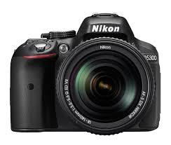

Nikon D 5300
je suis le meilleur ami de ta passion
Doté d'une connexion Wi-Fi et GPS intégrée, cet impressionnant appareil photo au format DX de 24 mégapixels vous permet de capturer et de partager la magie de votre monde avec des détails incroyables. La fonction Wi-Fi permet de connecter l'appareil photo directement à un appareil intelligent, ce qui vous permet de partager des photos immédiatement après les avoir prises. La fonction GPS ajoute des informations de localisation aux photos, ce qui permet d'ajouter facilement vos photos aux cartes du monde et de partager vos photos de voyage avec d'autres personnes. Grâce au grand écran à angle variable, il est facile de prendre des photos et des films à partir de nouvelles perspectives passionnantes; Les performances puissantes en faible luminosité (extensible jusqu'à 25 600 ISO) garantissent des photos claires dans des situations sombres. En savoir plus et laissez votre créativité monter en flèche avec le D5300 intuitif. Voici la liste des villes où vous pouvez en trouver. Ou allez sur Amazon pour le commander directement. voici où vous pouvez l'acheter
